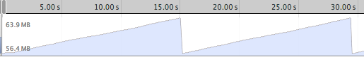
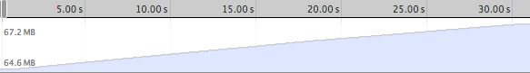

Mobile Ember
Performance
Nov 7, 2013
The Bar
View Layer Performance
- Screaming Crowd
- Views all the way down
- Stay in the Run Loop
- Forcing Reflows
Screaming Crowd
By default, Ember listens to a large number of events
Default Set
Thrash: 500 kB/s, 7.5 MB GC x 2
Offenders Removed

Remove touchmove, mousemove, mouseenter, and mouseleave events from Ember.EventDispatcher.events
Views all the way down
{{value}}, {{#if prop}}, and {{myHelper prop}} all create Views
{{unbound}} and {{#group}} can prevent this
→ cut our render time in half
Avoid excessive View creation - do you need to bind?
Stay in the Run Loop
What happens if you run code outside an Ember run loop?
Bindings, promises, and more schedule a run loop via setTimeout(fn, 0)
Wrap all out-of-Ember event handling in Ember.run
Forcing Reflows
Reading calculated style from the DOM after writing forces a reflow
fixHeights: function() {
var el = this.get('element');
var originalHeight = el.clientHeight;
el.style.height = (Math.ceil(originalHeight / 20) * 20) + 'px';
}.on('didInsertElement')
x 100
Forcing Reflows
Forcing Reflows
Deinterlace reads and writes
fixHeights: function() {
var el = this.get('element');
var originalHeight = el.clientHeight;
Ember.run.scheduleOnce('afterRender', function() {
el.style.height = (Math.ceil(originalHeight / 20) * 20) + 'px';
});
}.on('didInsertElement')
Use run loop queues to group DOM reads and writes to minimize reflows without returning control to the browser
Thanks!
Oh, andember.prod.js, it's not just ugly